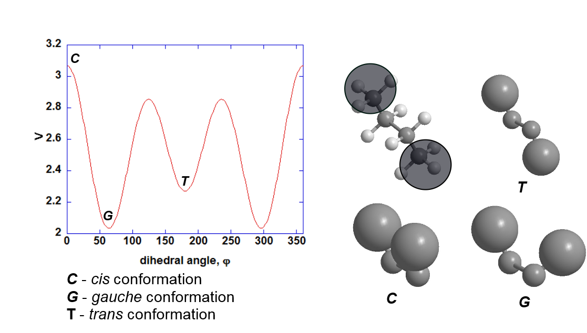

Torsion (dihedral) functions¶
The dihedral functions are introduced to account for the energy differences due to steric hindrance between atom 1 and 4 when they are rotated about the 2-3 bond.
{kind=link}
Where k is the torsion barrier, n is the priodicity and \({\delta}\) is the phase shift.
By setting n = 3, \({\delta}\) = 0 degree, you can model the cis and gauche conformations between the hydrogen atoms in ethane, as shown below.
{kind=link}
The cis conformation has the highest energy, whereas, the gauche conformation has the least since the hydrogen atoms are furtherest apart from one another. Note that there is no explicit trans conformation since there is only one type of atoms (hydrogen).
Note
The value of k is set arbitrarily to 2.0, representing the extent of energy differences between two conformations (well-depth).

For more complicated structure, one would need to model all different conformations with different energies. This can be achieved by expanding the dihedral function with additional terms, each with the unique contribution to the rotational energy:
{kind=link}
For example, for OPLS FF, the dihedral parameters for general C-C-C-C in an alkane chain is as follows
k1 = 1.135, k2 = -0.151, k3 = 0.4 kcal/mol and \({\delta}\) = 0.0 degree and the graph is shown below:
{kind=link}
The structures shown on the right illustrate the rotation of terminal methyl groups in butane and results in various conformations.
Note
The gauche conformation appears to be more stable than the trans conformation. This is not the case for butane. However, the dihedral parameter sets were derived over a large number of test molecules with different atoms attached to the 1,4 positions. The parameters are therefore applicable, in a ‘general sense’, to molecules that contained alkyl chains. Also, bear in mind that there are other dihedral and other energy components that contribute to the structure of the molecule.